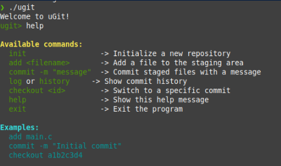
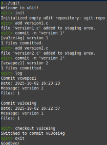

Simulador de Git de funciones básicas
Este proyecto es un simulador de consola que recrea las funciones esenciales de Git, como 'init', 'add', 'commit' y 'log'. Fue desarrollado como un ejercicio práctico para comprender mejor la lógica y el funcionamiento interno del control de versiones.
Repositorio del proyecto en GitHub
Imágenes del proyecto:

